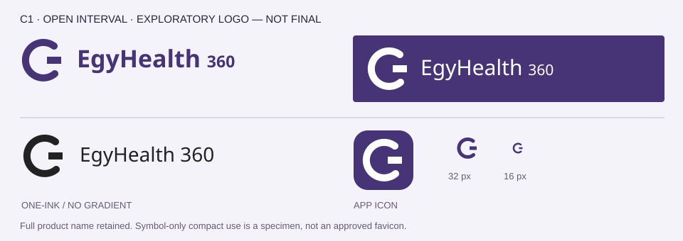
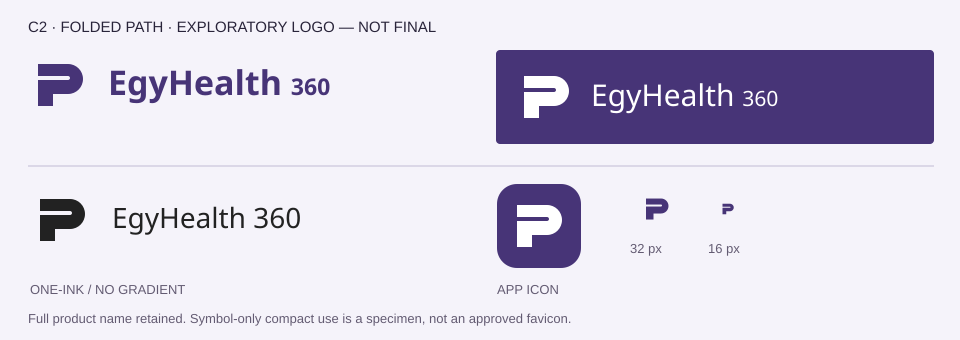
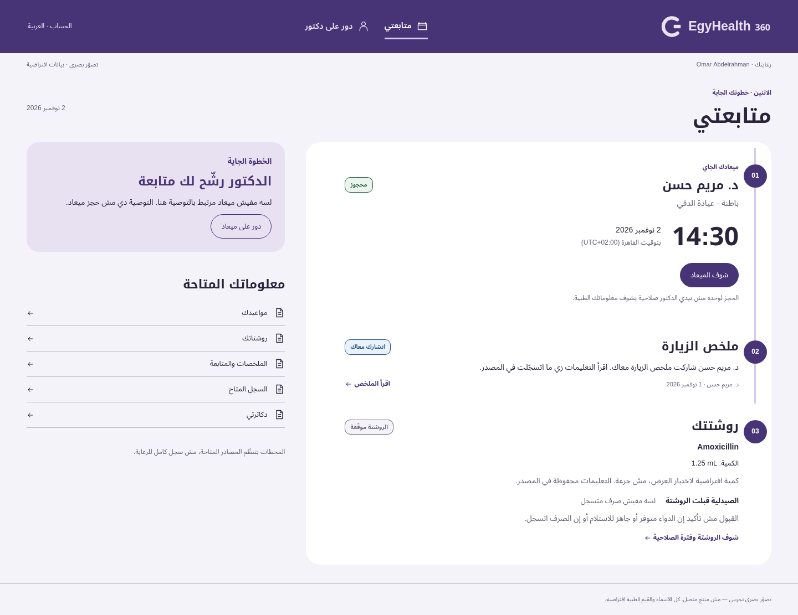
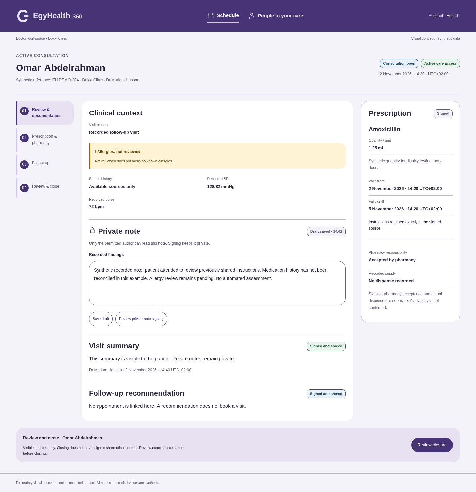
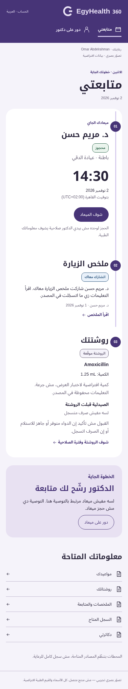
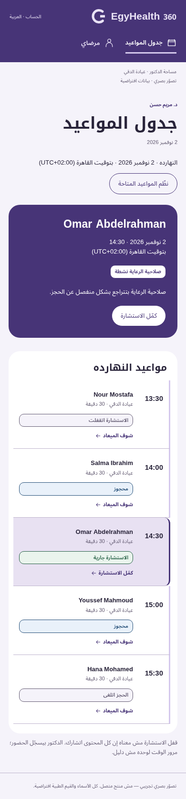

EGYHEALTH 360 · DIRECTION C · EXPLORATORY ONLY
A wayfinding system: distinct stations of responsibility connected by a visible, bounded thread.


EXPLORATORY — NOT FINAL BRAND PALETTE
#473477#725333#F5F3FA#FFFFFF#29243A#635B72#D5C9ED#256045#775008#912E35#254F78



Strong orientation and recognizable movement between related tasks.
The thread adds visual weight and may suggest a mandatory sequence unless labels stay explicit. A circle could overpromise completeness; station markers can resemble a progress tracker. No global completion state.
Trebuchet MS / system sans + Noto Kufi Arabic / Noto Sans Arabic fallbacks
متابعتي · جدول المواعيد · 1.25 mL